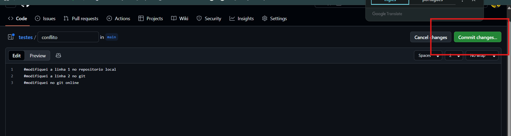

Resolução de Conflito

1. Alteração local feita no código
Fizemos mudanças locais no código, iniciando o processo que pode gerar conflito.

2. Commit local com mensagem
Executamos git add . e git commit -m "gerrando o conflitinho" para registrar a mudança.

3. Usando o lápis no GitHub
Editamos o arquivo online usando o ícone de lápis do GitHub.
4. Modificação feita diretamente no GitHub
Enquanto isso, o mesmo arquivo também foi alterado diretamente no GitHub.

5. Tentativa de envio (git push)
O git push foi rejeitado pois o repositório remoto estava mais atualizado. É necessário fazer git pull.

6. Tela de resolução de conflito no VS Code
No VS Code, escolhemos entre a versão local, remota ou mesclar as duas para resolver o conflito.